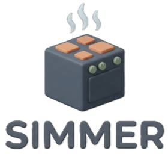

SIMMER
SIMMER es una aplicación web ligera y elegante que te ayuda a organizar tus comidas de forma inteligente. Guarda tus recetas favoritas, arma el menú de la semana y obtén automáticamente una lista de compras con todos los ingredientes que necesitas. El nombre evoca esa cocción suave y pausada — así debe sentirse planificar tus comidas: sin prisas, con control.